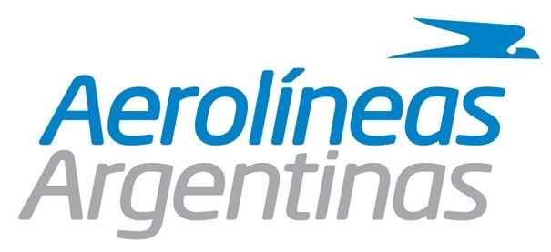

Para conecer los distintos valores te invitamos a entrar en las diferentes agencias de viaje y lineas aéreas para que puedas conocer cual es el paquete/valor que más te conviene.
Aerolíneas Argentinas es la línea aérea de bandera de la República Argentina, dedicada al transporte comercial de pasajeros y carga. Es reconocida por ser una de las mejores y más seguras aerolíneas del mundo y elegida por Travelers' Choice Awards como la mejor aerolínea de america en cuanto a servicios a bordo y puntualidad de 90 por ciento. Realiza vuelos a más de 66 destinos nacionales e internacionales, en Sudamérica, el Caribe, América del Norte y Europa. Anteriormente, Aerolíneas Argentinas realizó vuelos a Oceanía, en un vuelo traspolar a través de la Antártida y a África, en específico Sudáfrica.
Despegar (antiguamente Despegar.com) es una empresa de viajes líder en Latinoamérica basada en Buenos Aires. Fue fundada en 1999 por Roberto Souviron y hoy forma un grupo consolidado que integra a Best Day, Viajes Falabella y Koin. El objetivo inicial fue evitar que los viajeros hicieran largas colas en las ventanillas de las aerolíneas para conseguir un vuelo.5 Como muchos proyectos de Internet buscó expandirse rápidamente y en 10 meses abrió 9 oficinas en las principales ciudades de Latinoamérica. Fue una de las primeras firmas en ofrecer la posibilidad a los usuarios de comprar en línea un vuelo y reservar una habitación en un hotel en Internet. En pocos años se sumaron otros servicios como el alquiler de vehículos y viajes en cruceros. Hoy es la agencia con mayor presencia en la región y líder en ventas.
American Airlines, Inc. (AA), conocida simplemente como American, es una aerolínea estadounidense con sede en Fort Worth, Texas. Opera vuelos programados en una extensa red de rutas nacionales e internacionales en América del Norte, el Caribe, América Central, América del Sur, Europa, Asia y Oceanía. Su red de rutas gira en torno a sus nueve centros de operaciones en Dallas-Fort Worth, Nueva York, Charlotte, Los Ángeles, Filadelfia, Washington D.C., Phoenix, Miami y Chicago. Su base principal de mantenimiento se encuentra en Tulsa.
FB Líneas Aéreas S.A., que opera como Flybondi, es la primera aerolínea de ultra bajo coste de Argentina. La aerolínea fundada en 2016, opera actualmente 12 aeronaves Boeing 737-800, con bases en el Aeroparque Jorge Newbery y el Aeropuerto Internacional Ministro Pistarini, ambos en Buenos Aires.